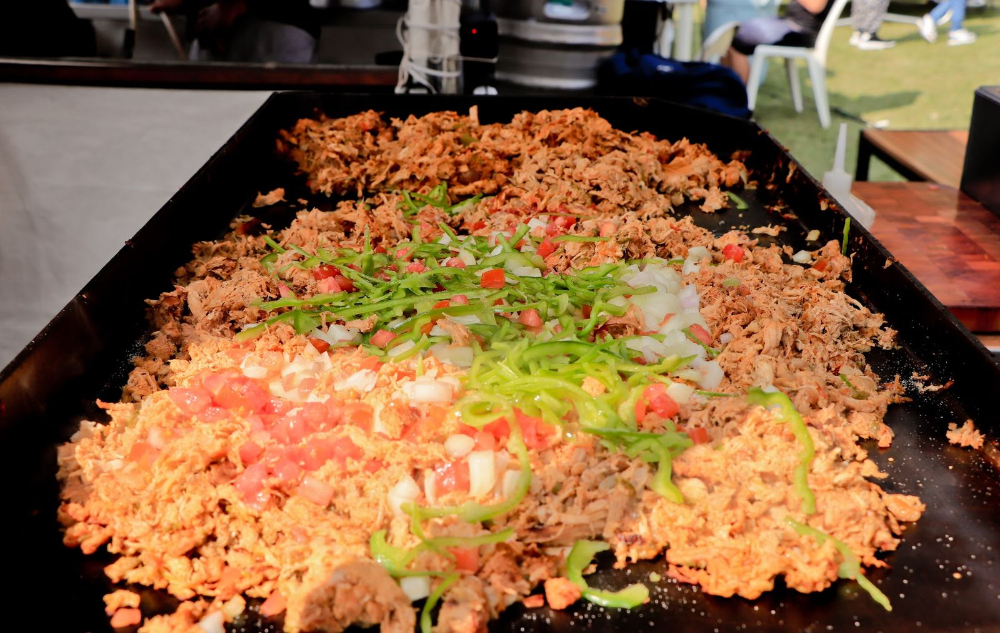
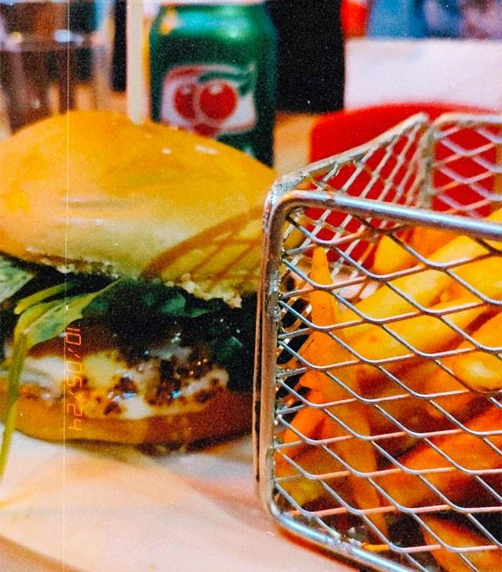
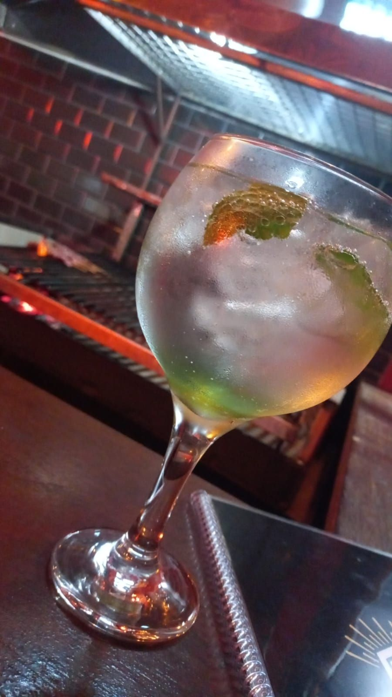
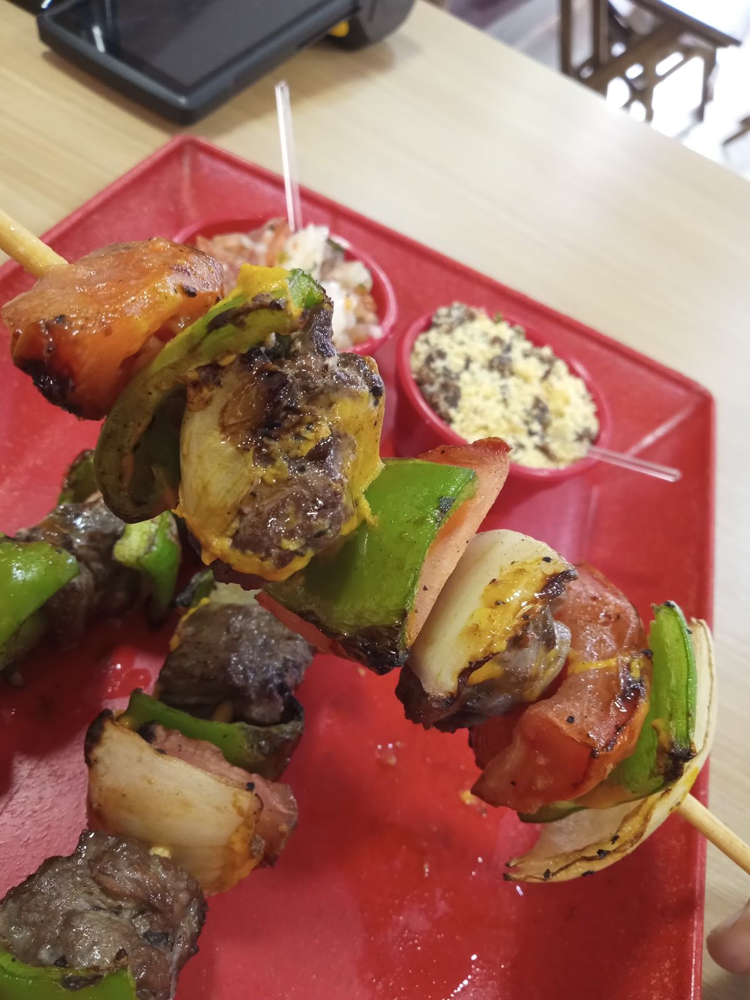
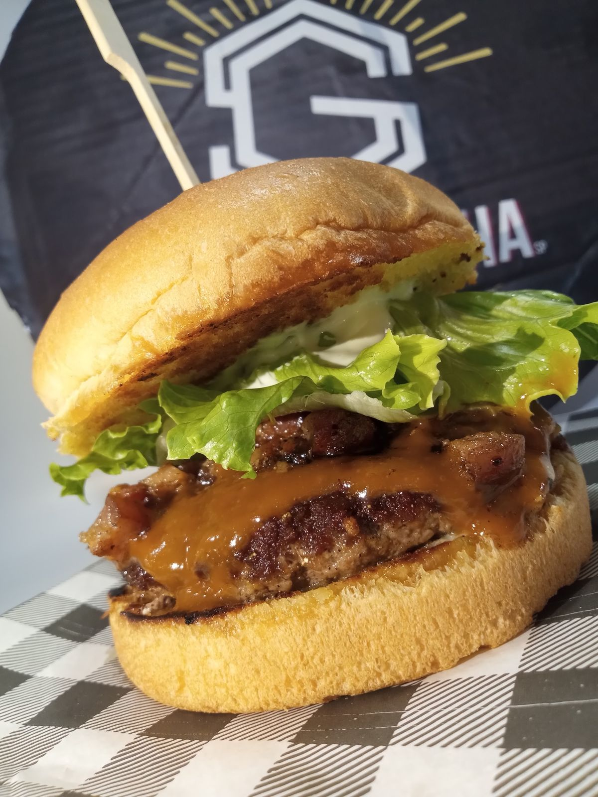
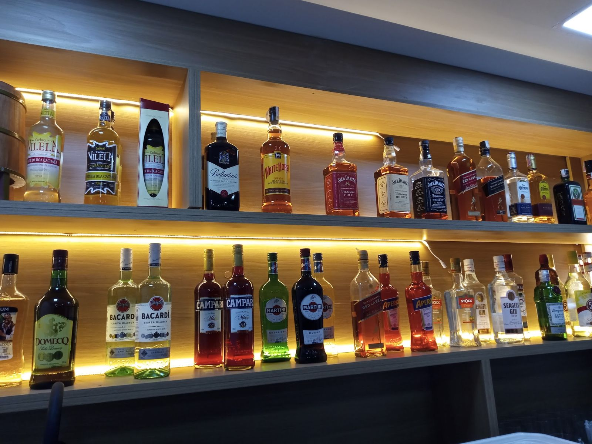
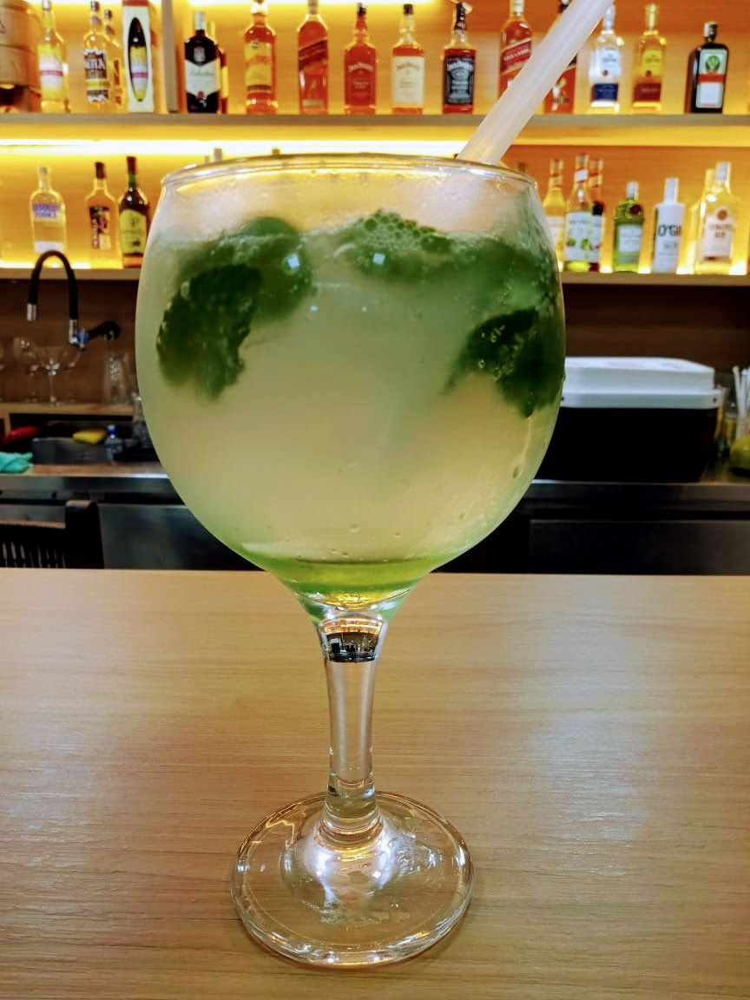
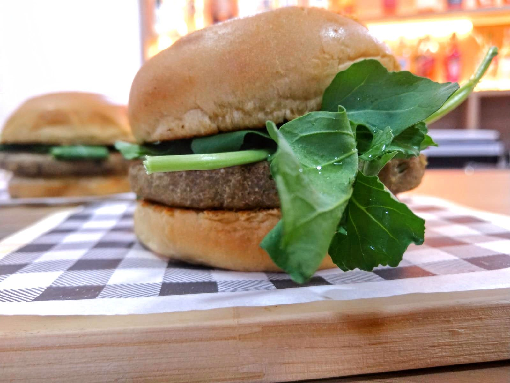

Almoço caprichado de dia. Brasa, lanche de pernil e cerveja gelada no fim da tarde.
Vila Mariana, São Paulo
de dia
Almoço no local
e marmita
no delivery.
Prato feito na hora pra quem trabalha e mora na Vila Mariana. Senta e almoça com calma ou pede pra chegar quentinho.
Seg a sáb · 10h30 às 16h

no fim da tarde
Espeto na brasa,
cerveja gelada
e drink bom.
O balcão acende, o espeto vai pra grelha e o lanche de pernil sai quente. Ambiente descontraído, do jeito que a vizinhança gosta.
Ter a sáb · 17h às 23h


na grelha
Do balcão
pra mesa.
rola pra ver →




quem passou por aqui
“O lanche de pernil é maravilhoso e o clima do bar é ótimo.”
“Ambiente gostoso e descontraído, comida muito boa.”
“Ambiente agradável, comida boa, cerveja gelada e drinks gostosinhos.”
comentários do Google
onde fica
R. Joel Jorge
de Melo, 757
Vila Mariana, São Paulo · 04128-081
- Segunda
- 10h30 às 16h
- Terça
- 10h30 às 16h · 17h às 23h
- Quarta
- 10h30 às 16h · 17h às 23h
- Quinta
- 10h30 às 16h · 17h às 23h
- Sexta
- 10h30 às 16h · 17h às 23h
- Sábado
- 10h30 às 16h · 17h às 23h
- Domingo
- Fechado